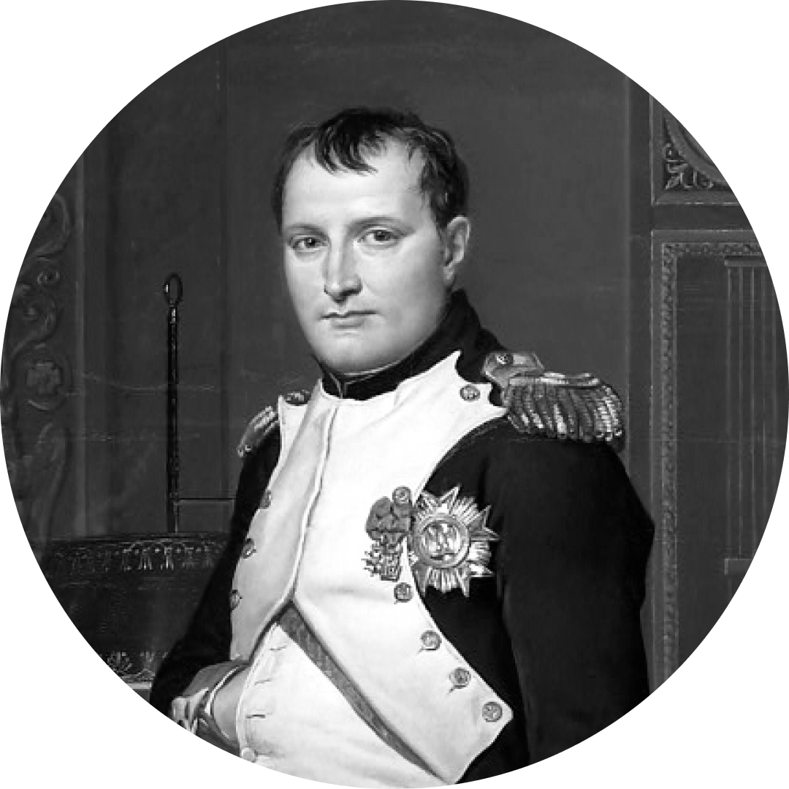

ВИДАТНІ ОСОБИСТОСТІ XIX
СТОЛІТТЯ
ЗМІСТ
Флоренс Найтінгейл (12 травня 1820 — 13 серпня 1910) — британська реформаторка сестринської справи. Засновниця першої школи медичних сестер, письменниця, феміністка, громадська діячка. Організаторка і керівниця загону санітарок під час Кримської війни 1853–1856 років, статистик. До дня народження Найтінгейл приурочено Міжнародний день медичної сестри. Сім років Найтінгейл присвятила розробці власного методу догляду за хворими з мінімальною витратою засобів і максимальним ефектом. Під час Кримської війни Найтінгейл організувала в Османській імперії догляд за пораненими солдатами союзників, а згодом заснувала перші курси сестер милосердя в Британії. Кримська війна зробила Флоренс національною героїнею. Солдати, що повернулися з фронту, розповідали про неї легенди, називаючи її «леді з світильником», тому що ночами, з лампою в руках, вона завжди обходила палати з хворими.
Отто Едуард Леопольд фон Бісмарк-Шенгаузен, з 1865 — граф, з 1871 — князь фон Бісмарк, з 1890 — герцог Лауенбурзький (1 квітня 1815 — 30 липня 1898) — німецький державний і політичний діяч. Прем'єр-міністр Пруссії (1862–1890), бундесканцлер Північнонімецького союзу (1867–1871), перший райхсканцлер Німецької імперії (1871–1890). За дипломатію реальної політики та сильне урядування отримав прізвисько «залізний канцлер». Його вважають національним героєм Німеччини. У Прусському королівстві Бісмарк заслужив серед консерваторів славу представника інтересів юнкерів, служив дипломатом (1851–1862 роки) в часи реакції. 1862 року призначений прем'єр-міністром Пруссії. Під час конституційної кризи в Пруссії виступав проти лібералів на захист монархії. Будучи міністром зовнішніх справ, перетворив Пруссію на панівну силу в Німеччині після німецько-данської війни 1864–1866 років. У франко-пруській війні 1870–1871 років виступав рушійною силою розв'язання німецького питання в малонімецькому сенсі та брав участь у створенні Другого Райху. Перебуваючи на посаді райхсканцлера та, за винятком короткої перерви, прусського прем'єр-міністра, він мав вагомий вплив на політику щойно створеного Райху аж до своєї відставки 1890 року.
Авраам Лінкольн (також — Ейбрагам, Абрагам; 12 лютого 1809 — 15 квітня 1865) — 16-й президент США (з березня 1861 до квітня 1865), перший президент від Республіканської партії, визволитель американських рабів. Авраам Лінкольн очолював США в період Громадянської війни. Його вважають національним героєм США. Прокламація Лінкольна про визволення рабів на території Конфедерації 22 вересня 1862 р. дала поштовх 13-й поправці до американської конституції (1865 р.), яка повністю скасувала рабство у США. Ця прокламація переконала закордонні держави, зокрема Англію, не підтримувати повсталі штати.Авраам Лінкольн став центральною історичною фігурою у свідомості американського народу, людиною, що запобігла розпаду Сполучених Штатів і який зробив значний внесок у становлення американської нації і скасування рабства як основної перешкоди для подальшого нормального розвитку країни. Лінкольн започаткував модернізації Півдня, емансипації рабів. Йому належить формулювання основної мети демократії: «Уряд, створений народом, з народу і для народу». У його президентство була також прокладена трансконтинентальна залізниця до Тихого океану, розширена система інфраструктури, створена нова банківська система, вирішена аграрна проблема. І донині Авраама Лінкольна вважають одним з найбільш інтелектуальних президентів Сполучених Штатів. На знак подяки американського народу у Вашингтоні шістнадцятому президентові Аврааму Лінкольну спорудили меморіал як одному з чотирьох президентів, що визначили історичний розвиток Сполучених Штатів Америки.

Наполеон I Бонапарт (15 серпня 1769 — 5 травня 1821) — французький державний діяч, полководець, перший консул Французької Республіки (1799—1804), імператор Франції (1804—1814, 1815). Творець однієї з найбільших імперій світу, реформатор і законодавець Європи. Представник роду Бонапартів. Народився в Аяччо, Корсика, Франція. Схвально зустрів Французьку революцію, став генералом революційної армії (з 1796). Командував французькими військами у війні проти Австрії і П'ємонту (1796—1797), засвідчивши талант великого воєначальника і політика. 1799 року здійснив державний переворот у Франції: полишив владу Директорії, став консулом. 1804 року проголосив Францію імперією, а себе її першим імператором. Запровадив нове законодавство, яке діє у більшості європейських країн. Завдяки перемогам над Австрією, Пруссією, Росією підкорив більшу частину Західної й Центральної Європи. Намагаючись встановити гегемонію на континенті, протистояв Британії та її союзникам. Зазнав серйозних втрат у неуспішній війні з Росією (1812). Після невдалої битви під Лейпцигом (1813) й здачі Парижа програв війну коаліції Австрії, Пруссії та Росії. 1814 року зрікся престолу, був засланий на Ельбу. 1815 року повернувся до Парижа і відновив імператорську владу, але зазнав поразки у битві під Ватерлоо. Вдруге відмовився від престолу, був засланий на британський острів Святої Єлени. Помер у Лонгвуді на Святій Єлені, Велика Британія. Національний герой Франції.
Джузеппе Гарібальді (4 липня 1807, Ніцца — 2 червня 1882, острів Капрера) — національний герой Італії, полководець, один із вождів Рісорджименто, парламентарій, письменник. Джузеппе Гарібальді присвятив життя «боротьбі за Італію об'єднану і вільну від деспотизму». Боротьба італійців за волю повинна була, на думку Гарібальді, вестися силами всього народу, тобто всієї нації, і він не раз говорив про неї як про боротьбу, в якій замовкають приватна ненависть і розбрати, і «всі класи громадян подають один одному руки… щоб захищати спільний дім — свою батьківщину». Він був прихильником об'єднання не тільки народу всередині країни, але також дружби між різними націями, про що не раз говорив у листах і спогадах, і що довів своїм прикладом, борючись за республіки Уругвай і Ріу-Гранде в Південній Америці, а також беручи участь у франко-прусській війні на боці республіканської Франції. Через усе життя Гарібальді проніс віру в братерство народів і право на національне самовизначення, ідеї, що отримали значне поширення в другій половині XIX століття.